LED and PM Sensor Exercise#
Introduction#
This lesson builds our knowledge of manipulating our LED and particulate matter (PM) sensor. We will be using our pHAT Extension board, an LED, and PM sensor. By using a script, we will activate our LED once the PM sensor hits a particular variable. Our example reacts and measures PM of 2.5 microns, our sensor threshold value is set to 30. 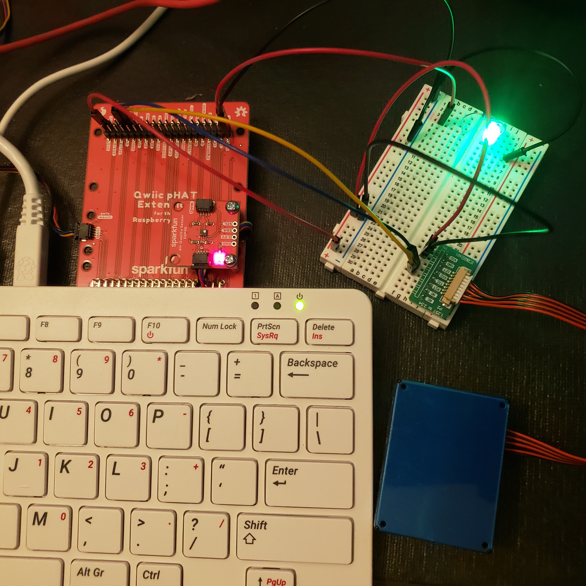
Getting Started#
For this exercise you’ll need:#
Raspberry Pi 400 computer
Sparkfun Qwiic pHAT Extension
PMS5003 – Particulate Matter sensor
Breadboard
5 Male to Female (M-F) jumper wires
3 Male to Male (M-M) jumper wires
One 330-ohm resistor
One single-colored LED
LED Setup#
1. Connecting Hardware#
First, ground the pHAT to the breadboard by attaching one black M-F wire to the GND Pin of the pHAT.
Attach the opposite end pin to our breadboard’s negative ( - ) rail.Next, attach a red wire to ‘Pin 21’ of the pHAT. Insert the opposite end into ‘A-4’ of the breadboard.
Follow our diagrams below throughout the exercise and make sure all connections are secure. 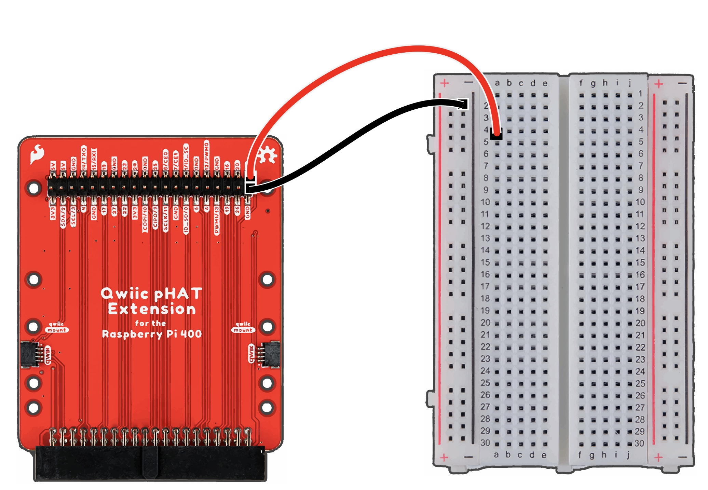 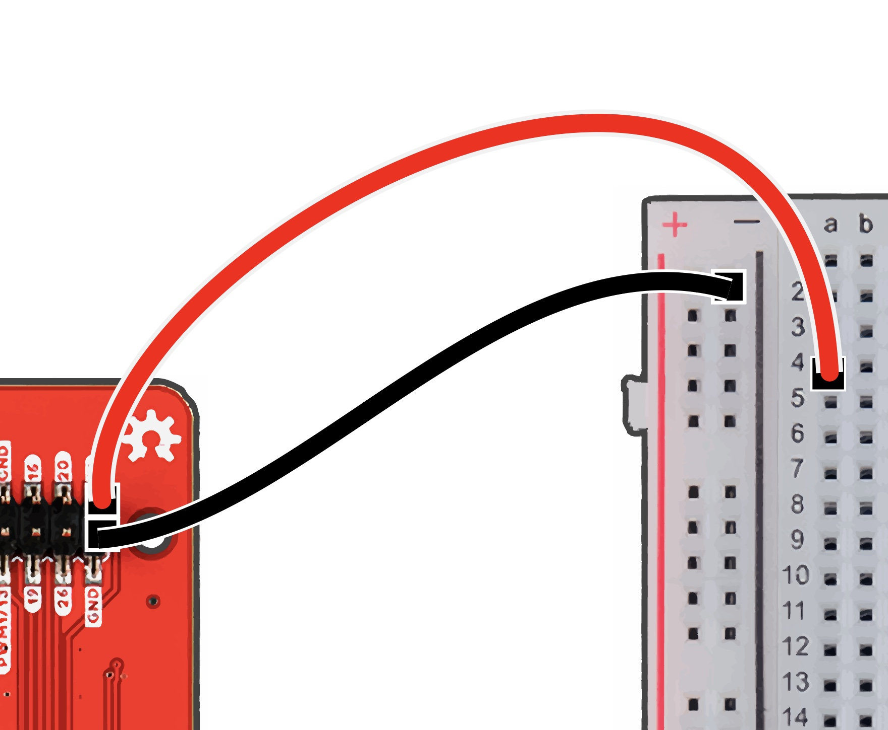
2. Adding LED and Resistor#
Collect a black M-to-M wire, insert one end into the negative rail of the breadboard. Then insert the opposite end into ‘J-5’ of the breadboard. 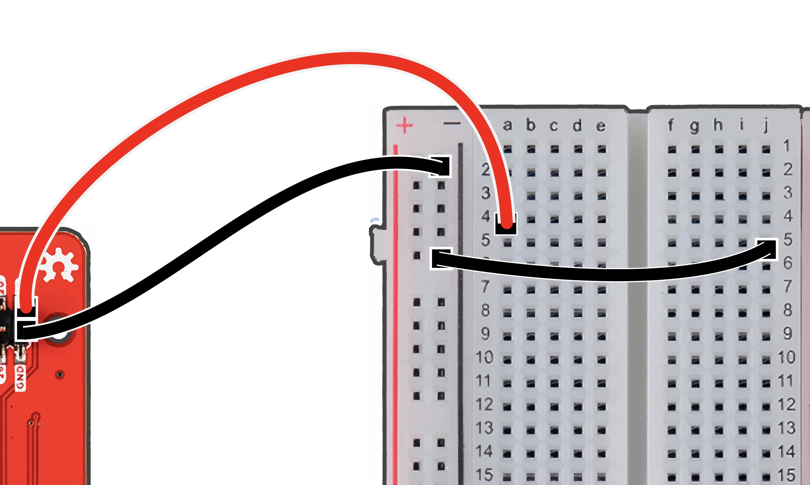
Take a 330-ohm resistor, insert into ‘E-4’ and ‘F-4.’ (We can insert our resister in either direction.)
Grab your LED and insert the anode, longer leg, into ‘G-4,’ and insert the cathode, the shorter leg, into ‘G-5.’
Note the anode is inserted into the same rail as the resistor and the pin 21 jumper wire. We also see that the cathode aligns on the same rail as the GND wire. 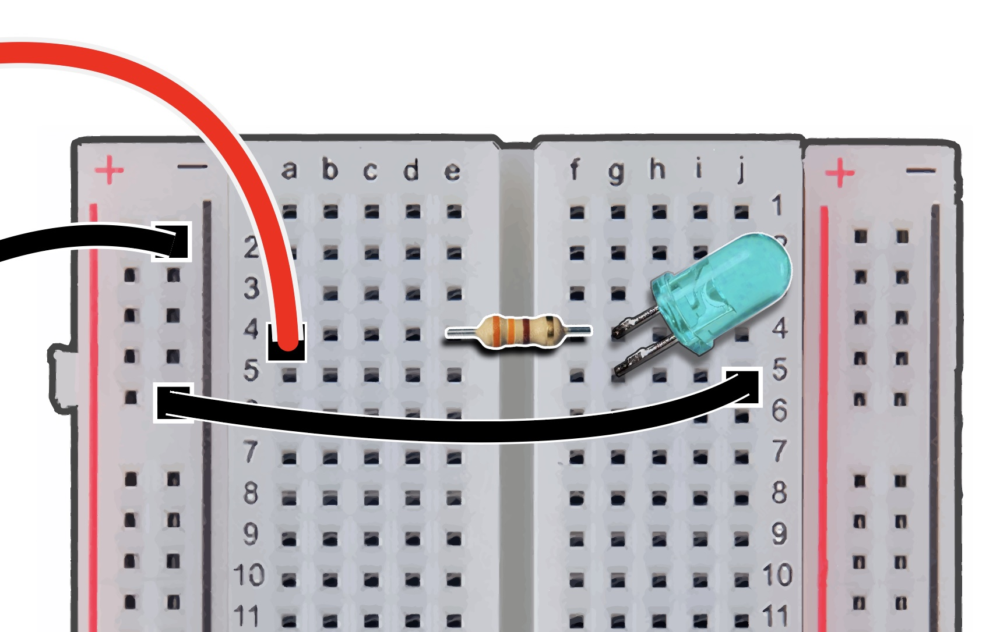
3. Testing LED in the Thonny IDE#
Open your Thonny IDE, we will create a script to test the LED. Paste the following code, save and run your file.
Ensure that all wires are inserted properly into their desired positions.
# This code is to blink LED,
# make sure all pins are connected properly.
from gpiozero import LED
from time import sleep
led = LED(21)
while True:
led.on()
sleep(1.0)
led.off()
sleep(1.0)
##PM Sensor ###4. Connecting PM Sensor
Collect your PMS 5003 Sensor, have the PM’s ribbon cable inserted securely to the rear of the PM sensor box.
Attach the PM sensor pins vertically to the breadboard.
We have ours aligned and connected from ‘J-23’ to ‘J-30.’ 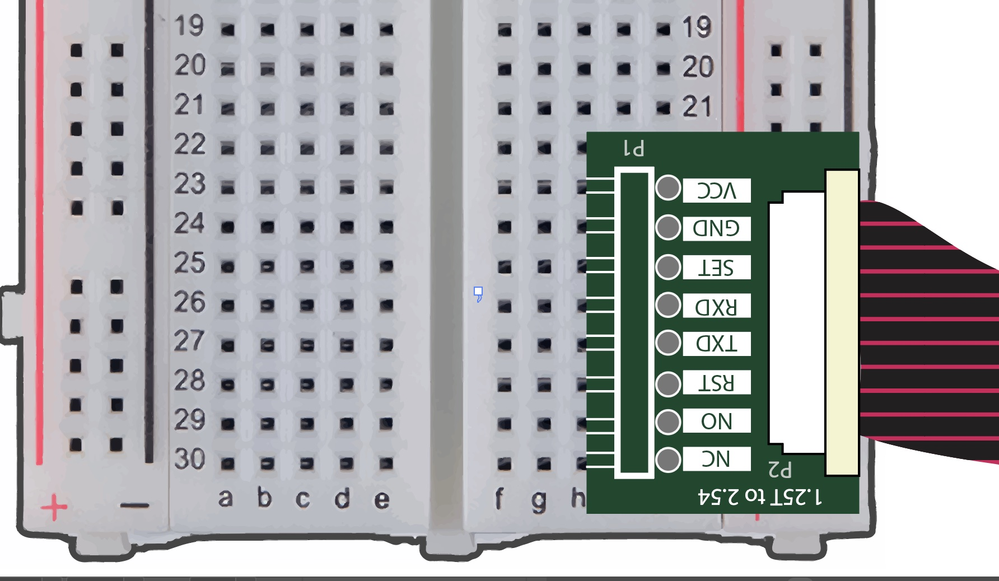
5. Wiring for PM Sensor#
We will add multiple wires to power, ground, transmit, and receive data.
Powering and Grounding to PM Sensor#
Ground the PM sensor with a black M-M jumper wire, insert one end into the GND ( – ) rail.
Insert the opposite end into ‘G-24’ of the breadboard. This rail is corresponding to the GND row of the PM sensor.
Attach a M-M jumper wire into the breadboard’s positive ( + ) rail.
Insert the opposite end into ‘G-23,’ corresponding the PM VCC pin. 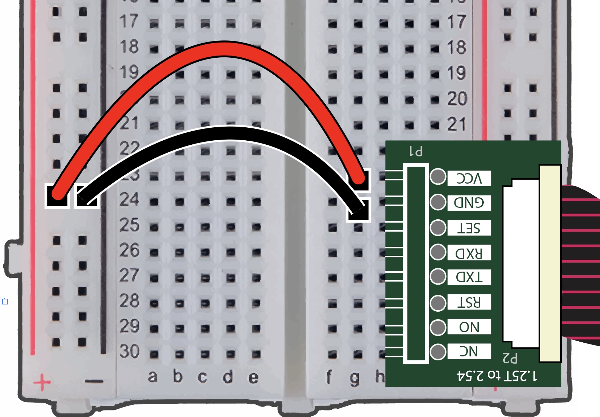
Connect a M-F cable into the positive ( + ) rail of the breadboard.
Attach the opposite end to the 5V pin of the pHAT. This provides accessible power if we were to add more components. 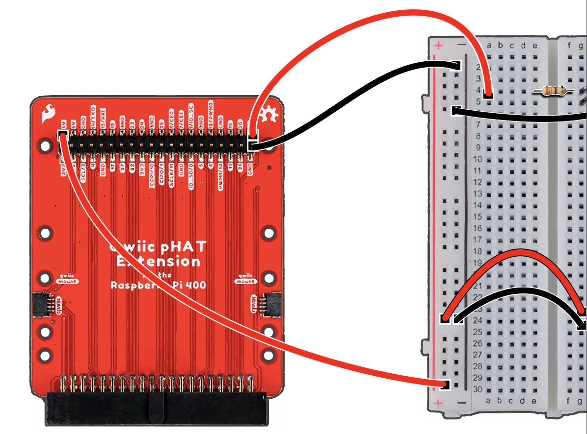
Transmitting and Receiving Data for PM Sensor#
Insert another M-F wire pin into ‘G-26’ of the breadboard, aligning with the ‘RXD’ rail. Attach the opposite end to ‘Pin 14/TXO’ of the pHAT.
(Our example here uses the blue wire in the diagram below.)Add another M-F jumper wire, insert the pin into ‘G-27,’ attach the opposite end to ‘Pin 15/RXI’ of the pHAT.
(We used yellow in the diagram below.) 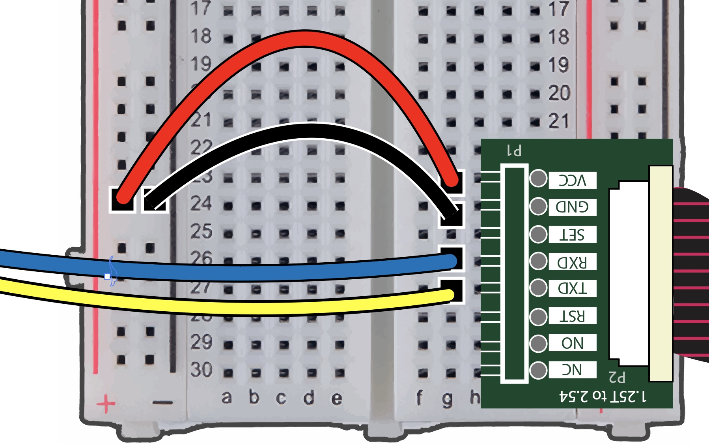 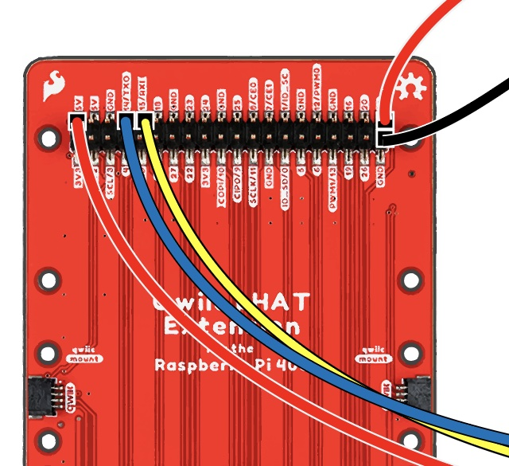
Pre-Exercise Setup#
6. PMS5003 Library Installation#
We’ll make sure the pms5003 library is imported and installed on Thonny.
Click on ‘Tools’ in your Thonny IDE, and select ‘Manage plug-ins’ to install packages for the exercise.
Search ‘pms5003’ into the text field then click ‘Search on PyPI.’ 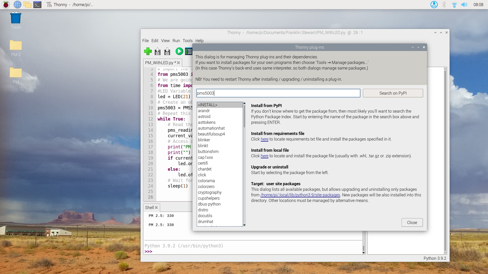
Choose the ‘pms5003 - PMS5003 Particulate Sensor’ link to install or update this plug-in for our PM Sensor. 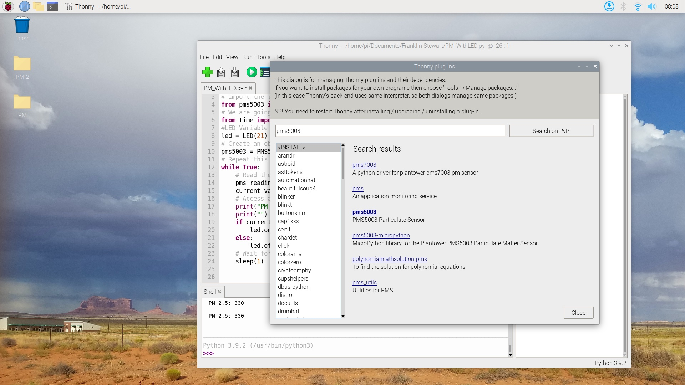
Close the Plug-In window.
LED and PMS5003 Activity#
7. Building and Running Our Python Code#
Insert the following code into your editor, save your python file, then run your program.
#Import GPIO for LED
from gpiozero import LED
# Import the library we use to access the sensor
from pms5003 import PMS5003
# We are going to wait between sensor readings so we don't spam too many
from time import sleep
#LED Variable for pin 21
led = LED(21)
# Create an object representing our sensor
pms5003 = PMS5003()
# Repeat this as long as the program is running
while True:
# Read the data from the sensor
pms_reading = pms5003.read()
current_value = pms_reading.pm_ug_per_m3(2.5)
# Access and print three specific pieces of data returned by the PM sensor
print("PM 2.5: %d" % current_value)
print("")
if current_value > 30:
led.on()
else:
led.off()
# Wait for one second before attempting to read from the sensor again
sleep(1)
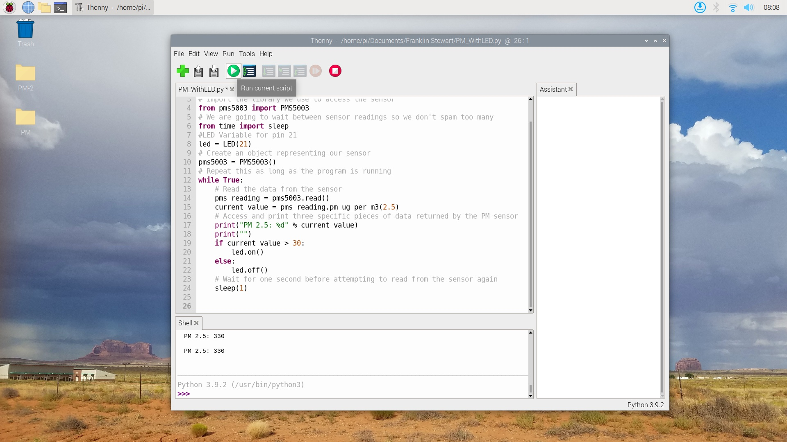
Note: The ‘current value > 30’ on line 19 activates our LED. We are measuring PM of 2.5 microns. As the threshold reaches a value of > 30, our LED will activate. 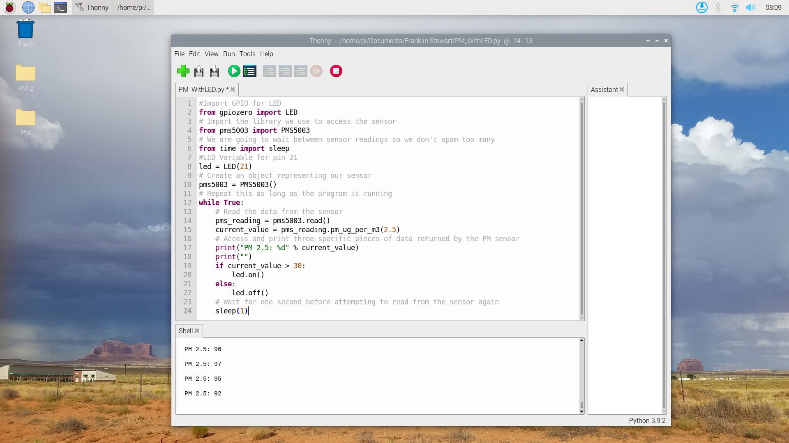
8. Expanding Our Learning#
The previous script is specific to measuring PM of 2.5 microns, try measuring other sizes. Our PMS 5003 measures PM from 1.0 to 2.5 or 10 microns. You can even adjust the variable for the LED by changing its ‘current value.’
Go to your script and edit line 15, change (2.5) to (1.0), this changes our PM to measure smaller particles
Next, edit line 17 to print the string “PM 1.0” to display that we are measuring in 1.0 microns.
Then adjust line 19 to a different value, we set threshold to ‘3’ in our example below. This will measure PM of 1.0 microns, and activate the LED once the ‘current value > 3’ is reached. 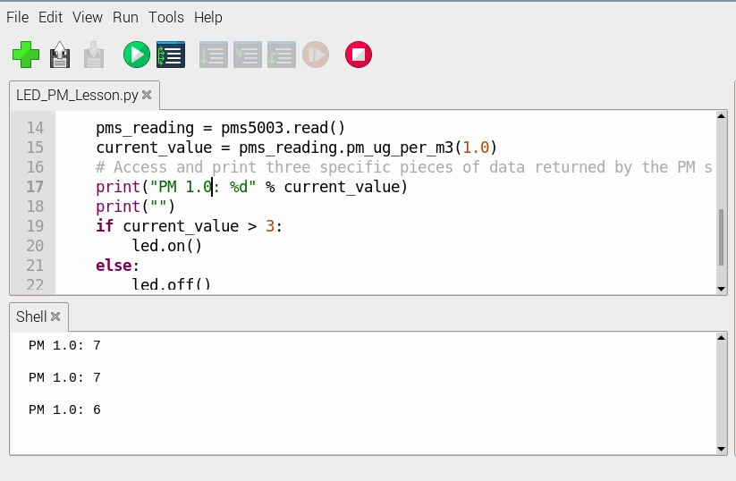
Final Wiring Diagram#
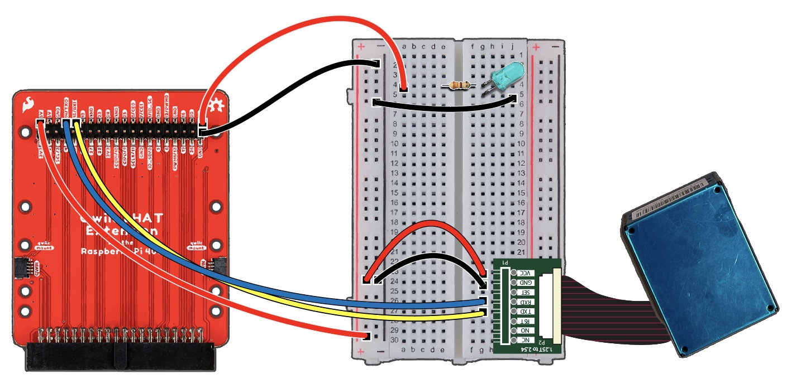